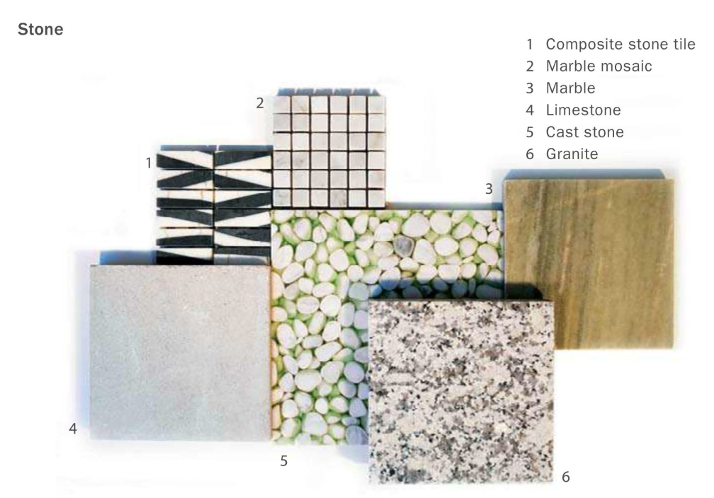
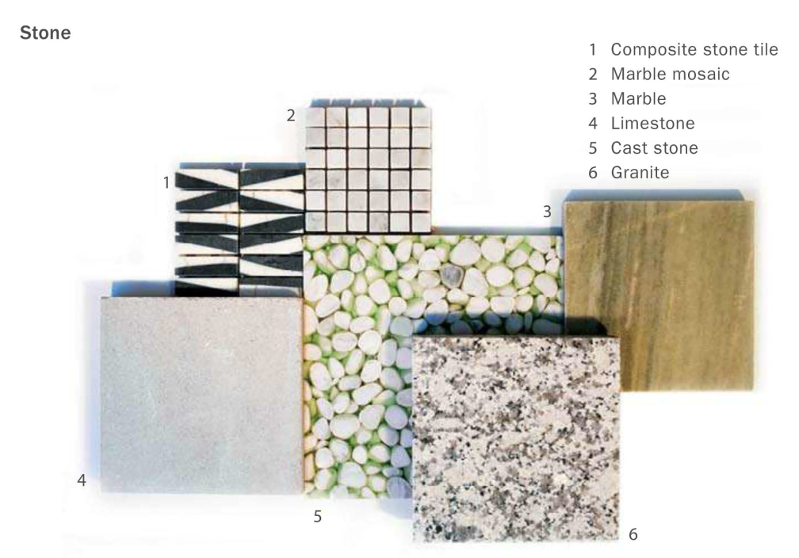

Texture
Incorporating a range and balance of textures in a space can be as character- defining as a sophisticated color scheme. It is difficult to think of texture in isolation. More effective is to consider it combined with color as part of an integrated concept for the design of a room's primary surfaces.
To work with texture, the designer must understand the effects of shadow and reflection caused by the surface configuration of materials, including fabrics, metal, stone, wood, glass, and painted plaster. Since all of these effects are concerned with how a surface catches light, the integration of texture into the design concept further requires the synthesis of material selection and lighting design.
TEXTURE IN MATERIALS
There are two basic types of textures: visual and tactile. Examples of materials with visual texture are wood and stone, their texture defined mostly by the natural graining and veining of the material. Tactile textures include hand- or machine-crafted fabrics and carpets.
These textures are used most effectively when they are positioned adjacent to a contrasting texture. A rough texture next to a smooth texture, an opaque material next to a translucent material, or a matte surface next to a reflective surface are all strategies that designers should employ when thinking about finishes.
 

TEXTURE AND COLOR
The interactions of color, material, and texture, in turn reacting to light, all contribute to the character of an interior environment. More specifically, color value has a direct effect on how a material translates its visual or tactile qualities. Three general families of palettes have different implications for the role of texture within the overarching design concept: the white, neutral, and dark palettes.
White Palettes
With white color palettes, the shadows created by differences in material textures are more pronounced; as a result, this palette strategy often foregrounds texture as the primary design concept. A white palette is most successful with an abundance of natural light to highlight the contrast in surfaces and textures.
For instance, the shadows of window shutters can cast strong patterns on surfaces that add to the richness of the finishes. This palette can also benefit materials with natural textures such as linens and sisal carpets. When paired with dark contrasting elements such as an ebonized floor or lacquered surface, a white palette can be refreshing and bold, but it demands meticulous maintenance and may not be practical for many clients.


Neutral Palettes
Neutral palettes are the least risky from a design standpoint, the easiest to get approved by a client, and the most difficult to transform into a sophisticated scheme. A neutral palette has fewer associations with a particular era and is therefore unlikely to become dated. On the other hand, this approach runs the danger of being banal if a rich range of textures and materials is not achieved.
Neutral palettes can easily incorporate many natural materials such as wood, cork, and stone to balance tactile textures with visual textures. When accent colors are injected into a neutral palette, they need only be applied in very small areas to create an overall compositional balance.

Neutral palettes cover a large spectrum of color, from creamy to cool gray tones. This range needs to be carefully matched with the appropriate natural materials, including wood, stone, and metal.
Creamy tones work well with medium-toned woods such as oak and anigre, warm stones such as limestone and travertine, and warm metals such as bronze and copper. Cool gray tones work well with dark woods such as walnut and ebony, lighter stones such as arabescato classico or thassos marbles, and cool metals such as stainless steel and chrome.

Dark Palettes
In general, darker palettes require more textural contrast than lighter palettes, because shad- ows are not as legible. As a result, dark palettes may rely more on reflection than material relief for textural contrast. Some reflective materials to consider are polished stone such as absolute black granite and black lacquered furnishings. Dark material palettes should include lighter contrasting wall surfaces so that the room does not become oppressive or gloomy.
Textures and Lighting
Both artificial and natural lighting affect the visual quality of textures. Shadows penetrating a room can provide visual interest, while reflected surfaces add depth to the overall composition.